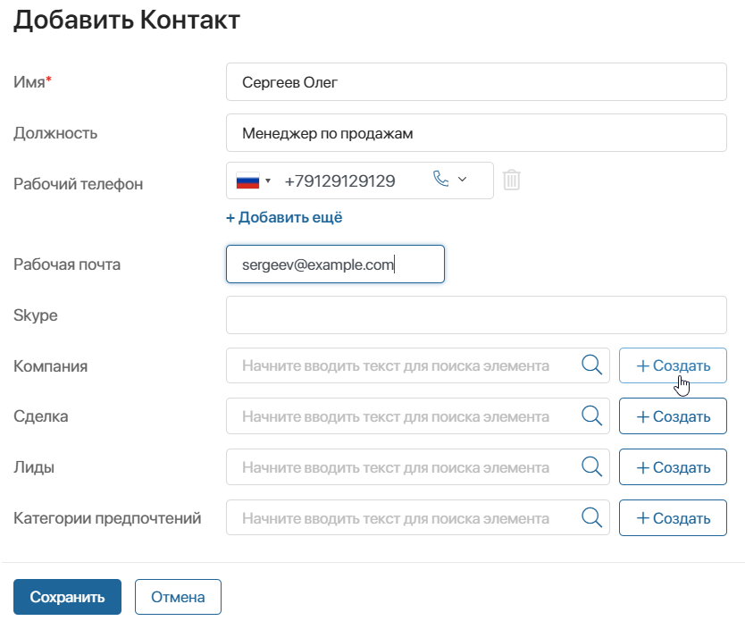
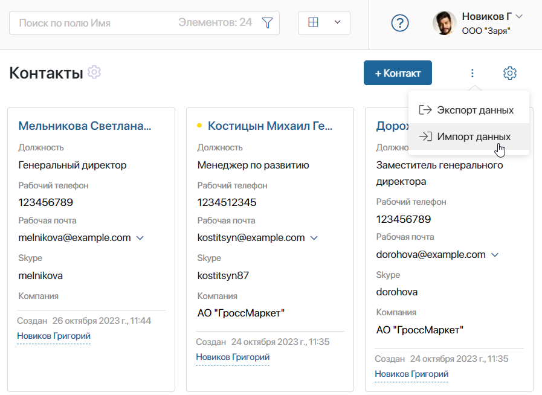

In BRIX, you can create contacts manually, add them automatically using web forms and the provided API, or import them from .xlsx or .csv files. These options are described below.
Create a contact manually
To add a contact manually, do the following:
- Open the contact creation form in one of the following ways:
- On the page of the Contracts app, in the upper right corner, click + Contact.

- On the create page of a company, click the + Create button.

- On the creation, view, or editing form of a deal, click + Create or
 on the sidebar.
on the sidebar.

- On the creation, view, or editing form of a lead, click + Create or on the sidebar.

- Fill out the required field Name on the creation form. You can also specify the contact person’s position, phone numbers, email address, or Skype account. Moreover, you can link the contact to a company, a deal, or a lead, and specify the preference categories if the client agreed to receiving your newsletter to their email. To do this, select an existing entry by clicking the magnifying glass icon or add a new record by clicking on the + Create button.

- Save the new app item.
Create a contact using the API
Each contact is an item of the Contacts app. Using the provided API, you can add new items into the app. You can find the request parameters in the Create app item article. Read more about the web API in BRIX Public API.
Create a contact using a web form
In BRIX, you can set up custom web forms from scratch and place them on any page of your website. After a visitor fills out the form, the system automatically sends the data into the CRM workspace and creates a new contact. Learn more about creating web forms in the Web forms article.

Import contacts from a file
You can quickly add a large amount of data to BRIX apps by importing it from .xlsx or .csv files.
To add contacts from a file, go to CRM > Contacts. In the upper right corner of the page, click the  icon and select Data Import.
icon and select Data Import.

In the window that opens, select an .xlsx or a .csv file from your PC or from files uploaded to the system. Then click Import.
Read more about uploading and downloading data in the system in the Data import and Data export articles.
Delete a contact
Deleting a contact is possible when the Delete button is added to its page. This can be done by the administrator. Read more about button settings in the Manage buttons on app item pages article.
When the Delete button is added, any user with the permission to delete items in the app can use it to delete contacts.
View previously deleted contacts
Deleted contacts are hidden from the app page. If you need to view them, in the search bar click the  icon. In the top right corner of the window, click Removed.
icon. In the top right corner of the window, click Removed.

To see all deleted contacts as a list, change the view to Table.
Found a typo? Select it and press Ctrl+Enter to send us feedback